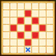

| Lv: | 140 |
|---|---|
| HP: | |
| MP: | |
| ATK: | |
| DEF: | |
| AGL: | |
| WIS: | |
| Move: | |
| Weight: | 60 |
| Weaknesses: |  |
 |
/ |  |
 |
|---|---|---|---|---|---|
| Resistances: |  |
 |
/ |  |
 |
| Immunities: |  |
| Family: |  |
Role: |  |
Element: |  |
|---|
Note: All perks/abilities denoted with an * are using unofficial translations
| Abilities | ||||||
|---|---|---|---|---|---|---|
| Level | Type | Name | MP | Element | Range | Description |
| 1 |  |
Lightning Enhancement* 雷のエンハンス |
45 |  |
 1-3 (incl. self) |
Raises Zap-type potency of all allies in area of effect for 4 turns |
| 31 |  |
Holy Night Lightning* 聖夜のいかずち |
98 |  |
 Front |
Deals major Zap-type martial damage (245 base potency) to all enemies in area of effect, rarely lowers Physical, Spell, Martial, and Breath Res for 3 turns |
| 54 |  |
Sparkly Stars* スターイルミネイト |
166 | |
2-4 |
Deals major Zap-type spell damage to all enemies in area of effect 5 times, very rarely lowers Zap Res for 3 turns |
| 82 | Stardust Sparks* スターダストスパーク |
143 | |
 Front |
Deals major Zap-type spell damage to all enemies in area of effect 2 times, often lowers Zap Res for 3 turns Turns needed: 3 turns (Times usable: 2) |
|
| Base Perks | ||
|---|---|---|
| Level | Name | Description |
| 1 | Max HP +30 | Raises max HP by 30 |
| 1 | WIS +15 | Raises max WIS by 15 |
| 1 | Stellar Princess* 星の王女 |
Action start until turn 10: Heals 200 HP, restores 15 MP, and reduces damage taken by 20% for 3 turns (self: 4 turns) for all allies in the surrounding large rhombus (incl. self) |
| 1 | All Elemental Crystals Drop Rate +10%* 全属性の水晶ドロップ数+10% |
Raises the drop rate of Elemental Crystals obtained in the Temple of the Conductor by 10% This perk activates even when the unit is not in the party |
| 110, 120, 130, 140 | Sparkly Stars* potency +2% | Raises Sparkly Stars* potency by 2% |
| 110, 120, 130, 140 | Stardust Sparks* potency +2% | Raises Stardust Sparks* potency by 2% |
| Awakening Perks | ||
|---|---|---|
| Awakening | Name | Description |
| 1 | Starry Night Protection* 星夜の加護 |
Action start on odd turns until turn 10: Heals 15% of max HP, restores 8% of max MP, raises martial and spell potency/recovery, and enables Zapforce for 3 turns |
| 2 | Crack Res +25 | Raises Crack resistance by 25 |
| 3 | Sporadic Lightning Spark Follow-Up* ときどきライトニングスパークの追撃 |
When any other ally attacks: Occasionally attacks with Lightning Spark* if enemy is within 2 to 4-space range (Lightning Spark*: Deals major Zap-type spell damage to 1 enemy, rarely lowers Physical, Spell, Martial, and Breath Res for 3 turns) |
| 3, 5 | Sparkly Stars* potency +5% | Raises Sparkly Stars* potency by 5% |
| 3, 5 | Stardust Sparks* potency +5% | Raises Stardust Sparks* potency by 5% |
| 4 | Sizz Res +25 | Raises Sizz resistance by 25 |
| 5 | Zapmeister | Lowers Zap-type ability MP cost by 10%, raises potency and recovery by 10% |
| 1, 2, 3, 4, 5 | Stats Up | Raises HP, MP, ATK, DEF, WIS and AGL by 5% |
| 1, 2, 3, 4, 5 | All Elemental Crystals Drop Rate +1%* 全属性の水晶ドロップ数+1% |
Raises the drop rate of Elemental Crystals obtained in the Temple of the Conductor by 1% This perk activates even when the unit is not in the party |